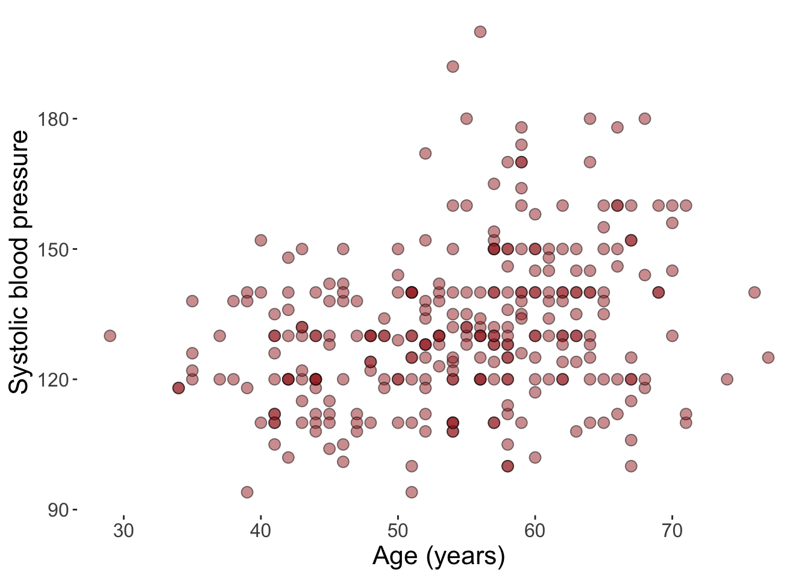

Suppose we want to model blood pressure as a function of age (dataset details found here):
Code
# Load packageslibrary(tidyverse)# Extract the data setdat <- cheese::heart_disease# Make a plotdat |>ggplot() +geom_point(aes(x = Age,y = BP ),shape =21,size =3,fill ="brown",alpha = .5 ) +xlab("Age (years)") +ylab("Systolic blood pressure") +theme(panel.background =element_blank(),axis.title =element_text(size =16),axis.text =element_text(size =12) )

It looks like a larger age is associated with a larger blood pressure, on average, so we fit a simple linear regression model:
Code
# Fit the modelmod1 <-lm(BP ~ Age, data = dat)summary(mod1)
Call:
lm(formula = BP ~ Age, data = dat)
Residuals:
Min 1Q Median 3Q Max
-38.659 -11.449 -0.904 10.218 67.444
Coefficients:
Estimate Std. Error t value Pr(>|t|)
(Intercept) 101.4851 5.9364 17.095 < 2e-16 ***
Age 0.5548 0.1076 5.157 4.55e-07 ***
---
Signif. codes: 0 '***' 0.001 '**' 0.01 '*' 0.05 '.' 0.1 ' ' 1
Residual standard error: 16.9 on 301 degrees of freedom
Multiple R-squared: 0.08119, Adjusted R-squared: 0.07814
F-statistic: 26.6 on 1 and 301 DF, p-value: 4.547e-07
We estimate that for every 10 year increase in age, systolic blood pressure increases by 5.5 mmHg. We can also write out the full regression equation for estimating the blood pressure given a new patient’s age:
As we can see, all of the predictions match, thus we understand exactly how the model works.
Adding spline terms
Now suppose from the plot above we argue there may be a nonlinear relationship between age and blood pressure, such that it only slightly increases at lower ages and then accelerates in higher ages. So we choose to use a restricted cubic spline with 3 knots:
Code
mod2 <-lm(BP ~ rms::rcs(Age, 3), data = dat)summary(mod2)
Call:
lm(formula = BP ~ rms::rcs(Age, 3), data = dat)
Residuals:
Min 1Q Median 3Q Max
-37.817 -11.576 -1.212 9.642 66.782
Coefficients:
Estimate Std. Error t value Pr(>|t|)
(Intercept) 94.8089 11.2104 8.457 1.22e-15 ***
rms::rcs(Age, 3)Age 0.7016 0.2351 2.984 0.00308 **
rms::rcs(Age, 3)Age' -0.1854 0.2640 -0.702 0.48305
---
Signif. codes: 0 '***' 0.001 '**' 0.01 '*' 0.05 '.' 0.1 ' ' 1
Residual standard error: 16.91 on 300 degrees of freedom
Multiple R-squared: 0.0827, Adjusted R-squared: 0.07659
F-statistic: 13.52 on 2 and 300 DF, p-value: 2.38e-06
We can see there are now 2 parameters in the model to capture the age effect. We can again plot this to see what it looks like:
The estimated curve didn’t take the shape of what we suspected (and maybe with more flexibility (i.e., knots), it would), but we’ll run with it anyway.
Writing the regression equation
The question is: how do we write out the formula for this model such that we input an age (in years) and get a predicted blood pressure?
If we did what we did before with simple linear regression and just blindly plug in age to what is given from the model output above, we’d have:
\[BP = 94.8 + 0.70 \times Age - 0.19 \times Age \]
Now if we again compare the output of that equation with what the correct fitted values are from the predict function:
It turns out none of them are correct. So obviously something is wrong.
Find the knot locations
First, we need to figure out what gets inputted into the equation. The coefficient for the second age term in the model output (-0.185) is not multiplied by the raw age value, but rather by some transformation of it.
Specifically, we can recall that age on the original scale will be transformed by a truncated power basis at each knot:
\[h(x,\nu) = (x-\nu)^3_+\]
where \(\nu\) is the knot location and \(+\) means we take \((x-\nu)^3\) if \(x>\nu\) and 0 otherwise.
Ahhh okay. So we need to take our raw age value, first plug it into that formula, and then multiply it by the coefficient from the model’s output. In sloppy notation, something like this:
We’re still having problems. It looks like some of the predictions from our new formula match the correct output, but most don’t.
Normalizing the transformation
In the rms::rcs documentation, it states that the default behavior (seen by the norm argument) is to “normalize by the square of the spacing between the first and last knots”. Applying this to our age transformation, our normalization factor is:
So in finding the basis vectors for the spline term, this value was implicitly multiplied through, causing our apparent equation above to be miscalibrated from the original age scale. To remedy this, we simply need to divide the model coefficient for the spline term (-0.185) by the normalization factor. So our equation becomes:
Now we have an equation that takes an age value as input (in years) and outputs the predicted systolic blood pressure. Finally, we understand exactly how this model works.
Why is this useful?
First, it’s obviously important to understand how modeling software is getting to the results it gives you, so that you can correctly interpret it, among other things. Second, from a pragmatic point of view, the ability to write out the full regression equation allows you embed your model into any application (even Excel if you wanted), instead of requiring the predict function to be run, which in turn would require R to be a part of the application’s server. In this case, it’s unnecessary for that to be a requirement, since we can simply reconcile our model into an easily understandable equation. Luckily, there are also some functions that can extract these formulas for you for this exact purpose so you don’t have to go through the cumbersome calculations above.
Source Code
---title: "How to reconcile the regression equation from spline terms"description: "Using the {rms::rcs} function"author: "Alex Zajichek"date: "11/25/2024"image: "feature.png"categories: - Regressionformat: html: code-fold: true code-tools: true---{{< video https://www.youtube.com/embed/HXTjssAYCdw >}}Suppose we want to model blood pressure as a function of age (dataset details found [here](https://archive.ics.uci.edu/dataset/45/heart+disease)):```{r, message = FALSE}# Load packageslibrary(tidyverse)# Extract the data setdat <- cheese::heart_disease# Make a plotdat |> ggplot() + geom_point( aes( x = Age, y = BP ), shape = 21, size = 3, fill = "brown", alpha = .5 ) + xlab("Age (years)") + ylab("Systolic blood pressure") + theme( panel.background = element_blank(), axis.title = element_text(size = 16), axis.text = element_text(size = 12) )```It looks like a larger age is associated with a larger blood pressure, on average, so we fit a [simple linear regression](https://en.wikipedia.org/wiki/Simple_linear_regression) model:```{r}# Fit the modelmod1 <-lm(BP ~ Age, data = dat)summary(mod1)```We estimate that for every 10 year increase in age, systolic blood pressure increases by `r round(mod1$coefficients[[2]] * 10, 1)` mmHg. We can also write out the full regression equation for estimating the blood pressure given a new patient's age:$$BP = 101.49 + 0.56 \times Age$$And we can add this to our plot to get a visual.```{r}# Make a plotdat |>ggplot() +geom_point(aes(x = Age,y = BP ),shape =21,size =3,fill ="brown",alpha = .5 ) +geom_abline(slope = mod1$coefficients[[2]],intercept = mod1$coefficients[[1]],linewidth =2 ) +xlab("Age (years)") +ylab("Systolic blood pressure") +theme(panel.background =element_blank(),axis.title =element_text(size =16),axis.text =element_text(size =12) )```Simple enough. We can verify our formula works by comparing with the output of the `predict` function:```{r}tibble(BP1 =predict(mod1, newdata = dat),BP2 = mod1$coefficients[[1]] + mod1$coefficients[[2]] * dat$Age) |>with(data = _, paste0(round(100*mean(near(BP1, BP2))), "% of fitted values match."))```As we can see, all of the predictions match, thus we understand exactly how the model works.### Adding spline termsNow suppose from the plot above we argue there may be a nonlinear relationship between age and blood pressure, such that it only slightly increases at lower ages and then accelerates in higher ages. So we choose to use a [restricted cubic spline](https://en.wikipedia.org/wiki/Spline_(mathematics)) with 3 knots:```{r}mod2 <-lm(BP ~ rms::rcs(Age, 3), data = dat)summary(mod2)```We can see there are now 2 parameters in the model to capture the age effect. We can again plot this to see what it looks like:```{r}# Make a plotdat |>ggplot() +geom_point(aes(x = Age,y = BP ),shape =21,size =3,fill ="brown",alpha = .5 ) +geom_line(data =tibble(Age =unique(dat$Age), Fitted =predict(mod2, newdata =tibble(Age =unique(dat$Age)))),aes(x = Age,y = Fitted ),linewidth =2 ) +xlab("Age (years)") +ylab("Systolic blood pressure") +theme(panel.background =element_blank(),axis.title =element_text(size =16),axis.text =element_text(size =12) )```The estimated curve didn't take the shape of what we suspected (and maybe with more flexibility (i.e., knots), it would), but we'll run with it anyway. ### Writing the regression equationThe question is: _how do we write out the formula for this model such that we input an age (in years) and get a predicted blood pressure?_If we did what we did before with [simple linear regression](https://en.wikipedia.org/wiki/Simple_linear_regression) and just blindly plug in age to what is given from the model output above, we'd have:$$BP = 94.8 + 0.70 \times Age - 0.19 \times Age $$Now if we again compare the output of that equation with what the correct fitted values are from the `predict` function:```{r}# Gather set of predicted valuespreds <-tibble(BP1 =predict(mod2, newdata = dat),BP2 = mod2$coefficients[[1]] + mod2$coefficients[[2]] * dat$Age + mod2$coefficients[[3]] * dat$Age )# Check concordancewith(data = preds, paste0(round(100*mean(near(BP1, BP2))), "% of fitted values match."))```It turns out _none_ of them are correct. So obviously something is wrong.### Find the knot locationsFirst, we need to figure out what gets inputted into the equation. The coefficient for the second age term in the model output (`r round(mod2$coefficients[[3]], 3)`) is not multiplied by the raw age value, but rather by some transformation of it.Specifically, we can [recall](https://www.zajichekstats.com/post/the-evasive-spline/) that age on the original scale will be transformed by a truncated power basis _at each knot_:$$h(x,\nu) = (x-\nu)^3_+$$where $\nu$ is the knot location and $+$ means we take $(x-\nu)^3$ if $x>\nu$ and 0 otherwise.In our example, we have 3 knot locations:```{r}# Extract knot locationsknots <-attr(rms::rcs(dat$Age, 3), "parms")knots```We can verify that these are the $10^{th}$, $50^{th}$ and $90^{th}$ percentiles of the age distribution (which is the default).```{r}quantile(dat$Age, c(.1, .5, .9))```Then, we can write out the full transformation for the spline term using the [formula](https://support.sas.com/resources/papers/proceedings16/5621-2016.pdf):$$X_{trans} = (x-\nu_1)^3_+ - \frac{\nu_3 - \nu_1}{\nu_3 - \nu_2}(x-\nu_2)^3_+ + \frac{\nu_2 - \nu_1}{\nu_3 - \nu_2}(x-\nu_3)^3_+$$Plugging in our quantities, we get:$$Age_{spline} = (age - 42)^3_+ - \frac{66-42}{66-56}(age - 56)^3_+ + \frac{56-42}{66-56}(age - 66)^3_+$$Ahhh okay. So we need to take our raw age value, first plug it into that formula, and _then_ multiply it by the coefficient from the model's output. In sloppy notation, something like this:$$BP = 94.8 + 0.70 \times Age - 0.19 \times Age_{spline}$$So we'll do that, again comparing with the correct output of the `predict` function:```{r}# Compute the spline valueage_spline <-pmax((dat$Age-knots[1]), 0)^3- (knots[3] - knots[1])/(knots[3] - knots[2]) *pmax((dat$Age-knots[2]), 0)^3+ (knots[2] - knots[1])/(knots[3] - knots[2]) *pmax((dat$Age-knots[3]), 0)^3# Add new calculationpreds$BP3 <- mod2$coefficients[[1]] + mod2$coefficients[[2]] * dat$Age + mod2$coefficients[[3]] * age_spline# Check concordancewith(data = preds, paste0(round(100*mean(near(BP1, BP3))), "% of fitted values match."))```We're still having problems. It looks like _some_ of the predictions from our new formula match the correct output, but most don't.### Normalizing the transformationIn the [`rms::rcs` documentation](https://www.rdocumentation.org/packages/Hmisc/versions/5.1-3/topics/rcspline.eval), it states that the default behavior (seen by the `norm` argument) is to _"normalize by the square of the spacing between the first and last knots"_. Applying this to our age transformation, our normalization factor is:$$Norm = (\nu_3 - \nu_1)^2 = (66 - 42)^2 = 24^2 = 576$$So in finding the basis vectors for the spline term, this value was implicitly multiplied through, causing our apparent equation above to be miscalibrated from the original age scale. To remedy this, we simply need to _divide_ the model coefficient for the spline term (`r round(mod2$coefficients[[3]], 3)`) by the normalization factor. So our equation becomes:$$BP = 94.8 + 0.70 \times Age - \frac{0.19}{Norm} \times Age_{spline}$$We can again check to see how this compares to the (correct) output of the `predict` function:```{r}# Compute the normalizing factornorm_factor <- (knots[3] - knots[1])^2# Add new calculationpreds$BP4 <- mod2$coefficients[[1]] + mod2$coefficients[[2]] * dat$Age + mod2$coefficients[[3]] / norm_factor * age_spline # Check concordancewith(data = preds, paste0(round(100*mean(near(BP1, BP4))), "% of fitted values match."))```Finally, all of our calculated predicted values are correct!### The final formulaWe already wrote this out above, if you want to piece together the various components, but we'll do it again here in one fell swoop. $$\begin{equation} \begin{split}BP & = 94.8 + 0.70 \times Age + \\ & = \frac{-0.19}{(66-42)^2} \times \bigg ( \\ & = (Age - 42)^3_+ - \\ & = \frac{66-42}{66-56}(Age - 56)^3_+ + \\ & = \frac{56-42}{66-56}(Age - 66)^3_+ \bigg ) \\\end{split}\end{equation}$$Now we have an equation that takes an age value as input (in years) and outputs the predicted systolic blood pressure. Finally, we understand exactly how _this_ model works.## Why is this useful?First, it's obviously important to understand how modeling software is getting to the results it gives you, so that you can correctly interpret it, among other things. Second, from a pragmatic point of view, the ability to write out the full regression equation allows you embed your model into any application (even Excel if you wanted), instead of requiring the `predict` function to be run, which in turn would require `R` to be a part of the application's server. In this case, it's unnecessary for that to be a requirement, since we can simply reconcile our model into an easily understandable equation. Luckily, there are also [some functions](https://www.rdocumentation.org/packages/rms/versions/6.8-2/topics/Function) that can extract these formulas for you for this exact purpose so you don't _have_ to go through the cumbersome calculations above.{{< bluesky-comments uri="at://did:plc:sh3av73hihgu72vx7k44kgv7/app.bsky.feed.post/3lbubbyx3v42m" >}}